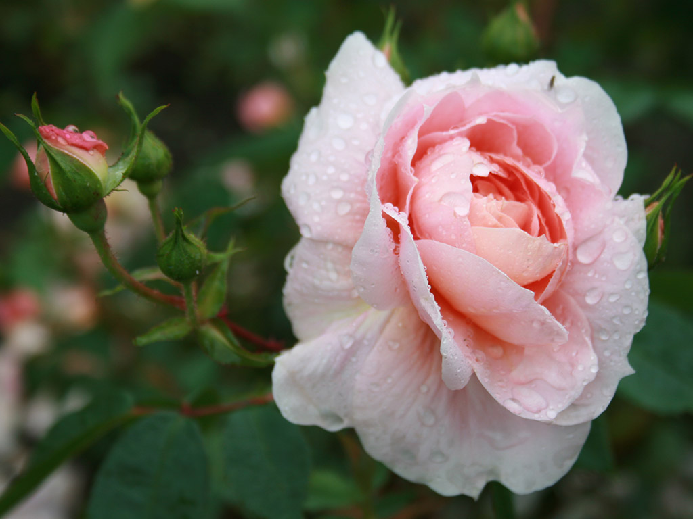
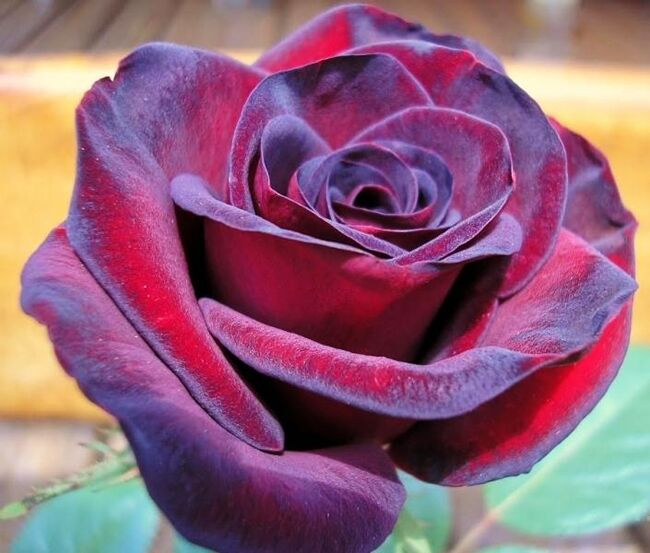
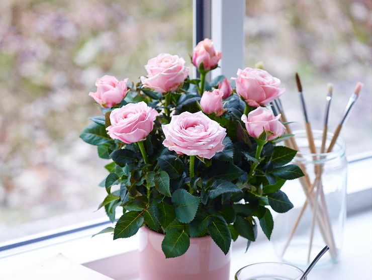

Ро́за — собирательное название видов и сортов представителей рода Шиповник (лат. Rósa), выращиваемых человеком. Большая часть сортов роз получена в результате длительной селекции путём многократных повторных скрещиваний и отбора. Некоторые сорта являются формами дикорастущих видов.
Розы впервые начали выращивать в Древнем Риме, хотя основное назначение садов того времени было выращивание полезных растений (плодовых, овощных, пряных и лекарственных), но в произведениях древнеримских писателей встречается описание около 10 сортов роз[5]. Геродот уже в V веке до н. э. в своей «Истории» описывает сады царя Мидоса в Македонии и упоминает там махровую розу. Теофраст в 300 году до н. э. описывает сады Греции и даёт описание роз с 15, 20 и даже 100 лепестками. На великолепной мозаике из Помпеи, хранящейся в Неаполитанском музее, можно увидеть и дамасскую розу (Rosa ×damascena), родиной которой несомненно является восток, и уже оттуда она попала в сады Южной Италии. С распадом Римской Империи садоводство перешло в монастыри. Именно монастырские сады послужили прототипом садов по ту сторону Альп. Карл Великий в своей инструкции по управлению поместьями Capitulare de villis указал перечень растений, которые необходимо выращивать, среди которых были и розы. Во времена Каролингов в садах декоративные растения выращивались прежде всего с лекарственной целью, хотя, несомненно, обращалось внимание и на их красоту. Для венков и других украшений собирались полевые цветы. И только кусты роз удостаивались особого внимания и выращивались в садах. На картинах великих итальянских художников эпохи Возрождения мы можем увидеть розы, которые выращивались в итальянских садах того времени, родиной которых скорее всего является Италия. В 1309 году папа Климент V переехал со своим двором из Рима в Авиньон и центр католической церкви оставался там по 1377 год. Как свидетельствуют историки, уже в это время на территории папского дворца выращивались розы. В саду же епископа Эйхштедтского в начале XVII века росла 21 разновидность роз, привезённые в Европу с востока через Константинополь, включая дамасскую. Во времена миннезингеров существовали прекрасные сады с красными и белыми розами, которыми миннезингеры и увенчивались. С конца XIX века селекцию роз ведут почти во всех странах мира. Существующее в настоящее время огромное разнообразие сортов роз образовано путём скрещивания и селекционного отбора нескольких сортов дикого шиповника. Многие сорта парковых махровых роз ведут своё происхождение от розы галльской (Rosa gallica), названной так за своё широкое распространение во Франции (Галлии). Культура этой розы и созданных на её основе сортов ведёт своё начало от Древнего Вавилона, затем Древней Греции и Древнего Рима, а с XIII века Франции и составила целую эпоху в истории роз, вплоть до XVIII века. Путём скрещивания розы галльской с другими видами были получены роза дамасская, роза столистная (Rosa ×centifolia) и роза белая. Приём скрещивания видов в отношении роз был известен в Европе уже в период Римской империи:522. История садовых роз началась в конце XVIII — начале XIX веков, когда в Европу (сначала в Англию, а затем во Францию) из юго-восточной Азии были завезены виды вечнозелёных теплолюбивых роз со своеобразным ароматом лепестков, напоминающим запах чая. Эти розы обладали новыми декоративными качествами: кожистыми блестящими листьями, особым благородством формы бутонов и цветка и особенно важным свойством — ремонтантностью, то есть способностью к продолжительному многократному цветению. Усилия селекционеров были направлены на создание новых сортов, которые бы совмещали в себе ремонтантность азиатских и морозостойкость европейских роз. Долгое время этого достичь не удавалось, и лишь в начале XIX века удалось преодолеть нескрещиваемость этих двух групп роз. Первым научную характеристику роз дал древнегреческий естествоиспытатель, философ и ботаник Теофраст. Он достаточно подробно описал дикие и садовые розы, обосновал приёмы их возделывания и размножения. Первое упоминание о выращивании роз в России относится к началу XVI века. Предполагается, что в Россию они попали через балканские славянские племена. Массовое распространение получили только при Екатерине II. К концу XIX века розы начали выращивать на всей Европейской части России. Важнейшие современные классы роз возникли на основе тетраплоидных видов (с числом хромосом 4n = 28) европейских (группа галльских роз) и диплоидных (2n = 14) азиатских культурных и дикорастущих роз (Rosa chinensis, Rosa moschata, Rosa gigantea). Большинство современных сортов Чайно-гибридных роз и флорибунда являются тетраплоидами.
Форма куста может быть от раскидистой до узкопирамидальной. Высота куста групп чайно-гибридных и флорибунда от 30 до 90 см; полиантовых — 30—45 см, некоторые сорта достигают 60 см; миниатюрные — 25—35 см. Группа плетевидных роз представляет собой кустарники с плетевидными, дугообразными стелющимися побегами от 2,5 до 6 метров длиной. У роз принято различать два типа многолетних ветвей — основные или маточные, ветви и ветви с законченным ростом и пять типов однолетних побегов — ростовые, преждевременные, жировые, генеративные и силлептические. Длина цветоноса у садовых роз колеблется от 10 до 80 см. Цветки роз удивляют своим многообразием. Их размеры колеблются от 1,8 см до 18 см, количество лепестков может составлять от 5 до 128, существует до десятка различных форм цветка, цветки могут быть как одиночные, так и в соцветиях от трёх до двухсот штук. Очень разнообразна цветовая гамма: нет только чисто-синих. Получен сорт зелёной розы, но он представляет интерес лишь для ботаников. Кроме однотонных существуют сорта роз с сочетанием окрасок, а также меняющие цвет в процессе цветения. Разнообразны ароматы различных видов и сортов роз. Кроме стандартного аромата дамасской розы, существуют розы с ароматом от фруктового и цитрусового до аромата благовоний и пряностей. Махровость многочисленных сортов культурных роз возникла в результате превращения части тычинок в лепестковидные стаминодии.
В большинстве случаев розы теплолюбивы, но есть виды, растущие в условиях сурового климата. Розы предпочитают яркое освещение и при значительном затенении почти или совсем не цветут, даже в полутени они истощаются и цветут очень слабо. Почвы могут быть любые по составу, но для садовых групп — хорошо удобренные. Розы выращивают на почвах с нейтральной реакцией, на слабокислых — лишь в южных районах. Определение границ кислотности связано с интенсивностью процессов минерализации. Окраска же сортов проявляется более интенсивно на почвах со щелочной реакцией. Почвы для роз должны быть хорошо дренированными. Для обильного и продолжительного цветения розы требуют постоянного полива. Цветение роз обеспечивается в значительной степени системой обрезок, различной для разных групп роз.
В соответствии с Международным кодексом номенклатуры культурных растений именование основывается на приоритете публикации. Каждый сорт может иметь только одно общепризнанное имя. Из нескольких названий, предложенных для данного сорта, избирается старейшее (за исключением специально оговорённых случаев), все остальные считаются синонимами. Использования забытых и устаревших названий сортов следует избегать, даже если эти названия имеют приоритет над широко распространёнными современными. Если эпитет сорта был использован более одного раза в пределах класса, к названию сорта следует добавлять имя автора и даты создания или регистрации. Примеры: Rosa 'Maggie' Rudolf Geschwind, 1900; Rosa 'Maggie' Meilland International, 2003. До уровня рода или вида розы называют в соответствии с Международным кодексом ботанической номенклатуры (МКБН). Растениям, отвечающим критериям сорта или группы, даются сортовые эпитеты. Эти эпитеты добавляются к названию ботанического таксона и заключаются в одинарные кавычки. Например: Rosa 'Harlekin'. При публикации названий сортов на языках, отличных от языка первоначальной публикации, переводить эпитет не следует. Можно применять транслитерацию (ISO 9) и транскрипцию. В том случае, если по маркетинговым соображениям эпитет сорта был переведён на другой язык, перевод эпитета следует рассматривать как торговое обозначение, а не как научное название. Практика применения торговых обозначений (®, ™) в качестве дополнения к правильным названиям сортов Международным кодексом номенклатуры культурных растений не поддерживается. Согласно Конвенции УПОВ, если сорт предлагается к продаже или вводится в торговый оборот, разрешается использовать зарегистрированное наименование в сочетании с товарным знаком, коммерческим наименованием или другим подобным обозначением. В случае такого сочетания, наименование должно тем не менее быть легко узнаваемым. В силу исторических причин и противоречивости норм и правил именования сортов роз в разных странах, многие названия отличаются только наличием или отсутствием знаков ® и ™ ('Grace', 'Grace ® ™'). Современные сорта роз имеют оригинальное авторское название и многочисленные синонимы. Синонимы обычно являются коммерческими названиями и используются для привлечения внимания к сорту. Последние годы, крупные фирмы производители роз стали давать своим сортам регистрационные кодовые названия. Первый слог названия пишется с заглавными буквами и обозначает фирму оригинатора (селекционера) (KOR — Kordes, MEI — Meiland), а остальная часть слова строчными. Например сорт 'Tchaikovski' имеет кодовое регистрационное название MEIchibon, 'Schneewittchen ®' — KORbin. Регистрационные названия введены для защиты авторских прав селекционеров и с целью унификации. С началом деятельности Международного центра регистрации роз (The International Registration Authority for Roses), положение с идентификацией сортов существенно упорядочилось. В печатных органах Американского общества розоводов («The American Rose Annual» и «The American Rose Magazine») публикуются все новые поступления. По мере накопления информационных материалов Международный центр регистрации совместно с Американским обществом розоводов и компанией Мак-Фарланд периодически выпускают Мировой каталог — «Современные розы» («Modern Roses»). При этом следует помнить о том, что в этом издании сорта расположены в соответствии с названиями, принятыми в США, а подлинные оригинальные названия приводятся в скобках, что не согласуется с Международным кодексом номенклатуры. Пример: оригинальное название одного из популярных французских сортов чайно-гибридных роз — 'Madame A. Meilland', доставленный в США во время второй мировой войны сорт получил там новое 'Peace'. В Италии он был зарегистрирован как 'Gioia', а в Германии — 'Gloria Dei'. В справочных изданиях Международного центра регистрации роз данный сорт значится как 'Реасе', остальные названия указаны в качестве синонимов. Международный центр регистрации роз на основании сведений о том, что какой-то старый сорт (выведенный 30 лет и более назад) предполагается исчезнувшим из торгового обращения, не имеет особого исторического значения и не использован в родословных существующих сортов, приходит к заключению о возможности его повторного применения. На этом основании появляется регистрационное объявление о том, что 'Bonfire', Mlt. (Turbat, 1928) вышел из обращения, и его имя освобождается для повторного использования. Вслед за этим даётся описание нового сорта 'Bonfire', Fl. (МсGredy, 1971), для которого использовано освободившееся название. Однако в некоторых ботанических садах и частных коллекциях эти устаревшие сорта могут сохраняться, что приводит к появлению в каталогах разных по происхождению сортов под одним названием.

Все розы относятся к роду Шиповник (Rosa). В настоящее время существует несколько тысяч садовых сортов и гибридов роз, происхождение их зачастую теряется в глубине веков. Поэтому в основу современной классификации роз положено разделение на классы и условные группы на основе устойчивых садовых признаков, а не их видового происхождения. Эта классификация была создана Американским обществом розоводов (ARS) и утверждена в 1976 году Всемирной федерацией обществ розоводов (WFRS). Последняя версия была опубликована в «Modern Roses» XI. The World Encyclopedia of Roses. Academic Press. 2000. Помимо этой классификации существуют и другие. Например, различают розы парковые и розы садовые. К парковым розам относятся красиво цветущие виды и сорта шиповника и их гибриды, разводимые в условиях сурового климата без укрытия на зиму или с лёгким укрытием. Садовые розы получены в результате многовековой культуры на основе вечнозелёных субтропических видов и их европейских гибридов. Эти виды и сорта требуют высокой культуры агротехники и укрытия на зиму. Им свойственно непрерывное цветение или повторное (ремонтантное) цветение после небольшого периода покоя. Цветочные почки закладываются на побегах текущего года. По количеству лепестков в цветках розы делят на три типа: простые (в цветке максимум 7 лепестков), полумахровые (8—20 лепестков), махровые (более 20 лепестков).
Примечание: материал взят из Википедии
Всем известно, что роза признана королевой цветов. Она завоевала место самого превосходеного цветка в сердцах многих творческих людей. Из века в век это чудесное растение служит поводом для Вдохновения у художников и писателей.
